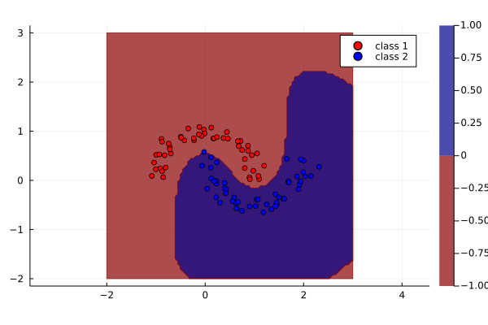

Support Vector Machine

You are seeing the HTML output generated by Documenter.jl and Literate.jl from the Julia source file. The corresponding notebook can be viewed in nbviewer.
In this notebook we show how you can use KernelFunctions.jl to generate kernel matrices for classification with a support vector machine, as implemented by LIBSVM.
using Distributions
using KernelFunctions
using LIBSVM
using LinearAlgebra
using Plots
using Random
# Set seed
Random.seed!(1234);Generate half-moon dataset
Number of samples per class:
nin = nout = 50;We generate data based on SciKit-Learn's sklearn.datasets.make_moons function:
class1x = cos.(range(0, π; length=nout))
class1y = sin.(range(0, π; length=nout))
class2x = 1 .- cos.(range(0, π; length=nin))
class2y = 1 .- sin.(range(0, π; length=nin)) .- 0.5
X = hcat(vcat(class1x, class2x), vcat(class1y, class2y))
X .+= 0.1randn(size(X))
x_train = RowVecs(X)
y_train = vcat(fill(-1, nout), fill(1, nin));Create a 100×100 2D grid for evaluation:
test_range = range(floor(Int, minimum(X)), ceil(Int, maximum(X)); length=100)
x_test = ColVecs(mapreduce(collect, hcat, Iterators.product(test_range, test_range)));SVM model
Create kernel function:
k = SqExponentialKernel() ∘ ScaleTransform(1.5)Squared Exponential Kernel (metric = Distances.Euclidean(0.0))
- Scale Transform (s = 1.5)LIBSVM can make use of a pre-computed kernel matrix. KernelFunctions.jl can be used to produce that.
Precomputed matrix for training
model = svmtrain(kernelmatrix(k, x_train), y_train; kernel=LIBSVM.Kernel.Precomputed)LIBSVM.SVM{Int64}(LIBSVM.SVC, LIBSVM.Kernel.Precomputed, nothing, 1, 2, [-1, 1], Int32[1, 2], Float64[], Int32[], LIBSVM.SupportVectors{Vector{Int64}, Matrix{Int64}}(27, Int32[13, 14], [-1, -1, -1, -1, -1, -1, -1, -1, -1, -1, -1, -1, -1, 1, 1, 1, 1, 1, 1, 1, 1, 1, 1, 1, 1, 1, 1], [1 2 3 4 5 6 7 20 21 26 29 46 50 51 52 53 54 55 67 68 75 76 77 83 88 99 100], Int32[1, 2, 3, 4, 5, 6, 7, 20, 21, 26, 29, 46, 50, 51, 52, 53, 54, 55, 67, 68, 75, 76, 77, 83, 88, 99, 100], LIBSVM.SVMNode[LIBSVM.SVMNode(0, 1.0), LIBSVM.SVMNode(0, 2.0), LIBSVM.SVMNode(0, 3.0), LIBSVM.SVMNode(0, 4.0), LIBSVM.SVMNode(0, 5.0), LIBSVM.SVMNode(0, 6.0), LIBSVM.SVMNode(0, 7.0), LIBSVM.SVMNode(0, 20.0), LIBSVM.SVMNode(0, 21.0), LIBSVM.SVMNode(0, 26.0), LIBSVM.SVMNode(0, 29.0), LIBSVM.SVMNode(0, 46.0), LIBSVM.SVMNode(0, 50.0), LIBSVM.SVMNode(0, 51.0), LIBSVM.SVMNode(0, 52.0), LIBSVM.SVMNode(0, 53.0), LIBSVM.SVMNode(0, 54.0), LIBSVM.SVMNode(0, 55.0), LIBSVM.SVMNode(0, 67.0), LIBSVM.SVMNode(0, 68.0), LIBSVM.SVMNode(0, 75.0), LIBSVM.SVMNode(0, 76.0), LIBSVM.SVMNode(0, 77.0), LIBSVM.SVMNode(0, 83.0), LIBSVM.SVMNode(0, 88.0), LIBSVM.SVMNode(0, 99.0), LIBSVM.SVMNode(0, 100.0)]), 0.0, [1.0; 1.0; 1.0; 0.6692991402295214; 1.0; 1.0; 0.7662938695220123; 1.0; 1.0; 1.0; 0.7876633502021276; 0.8059278625334235; 1.0; -1.0; -1.0; -1.0; -1.0; -1.0; -1.0; -0.4763263280276102; -0.03390781022931148; -1.0; -1.0; -1.0; -1.0; -0.518950084230163; -1.0;;], Float64[], Float64[], [-0.023457705156022746], 3, 0.01, 200.0, 0.001, 1.0, 0.5, 0.1, true, false)Precomputed matrix for prediction
y_pred, _ = svmpredict(model, kernelmatrix(k, x_train, x_test));Visualize prediction on a grid:
plot(; lim=extrema(test_range), aspect_ratio=1)
contourf!(test_range, test_range, y_pred; levels=1, color=cgrad(:redsblues), alpha=0.7)
scatter!(X[y_train .== -1, 1], X[y_train .== -1, 2]; color=:red, label="class 1")
scatter!(X[y_train .== +1, 1], X[y_train .== +1, 2]; color=:blue, label="class 2")
This page was generated using Literate.jl.